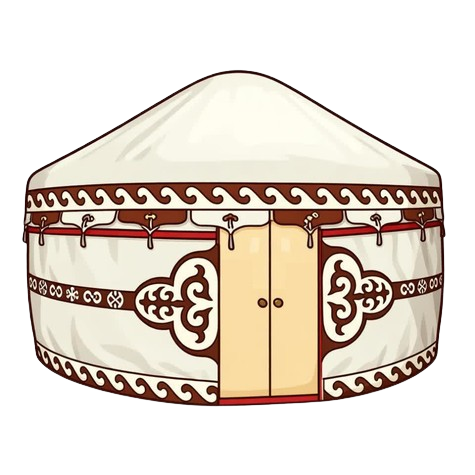
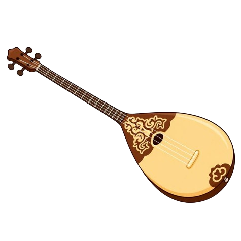
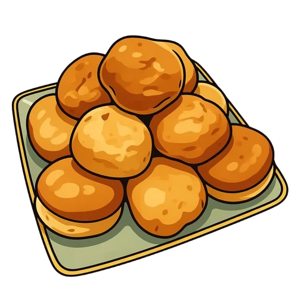
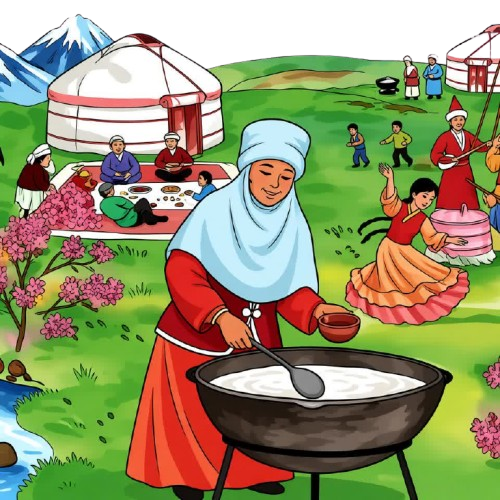
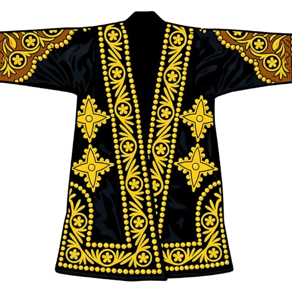
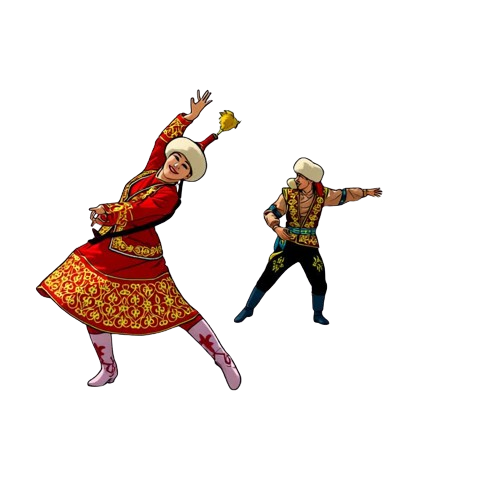

1
Әріптер мен дыбыстар
Letters & Sounds
2
Сәлем! Сенің атың кім?
Hello! What's your name?
3
Адамдар мен отбасы
People & Family
4
Бұл не?
What is this?
5
Сандар
Numbers
6
Қазір не істеп жатырсың?
What are you doing now?
7
Түстер
Colors
8
Көлем, салмақ пен сапа
Size, Weight & Quality
     